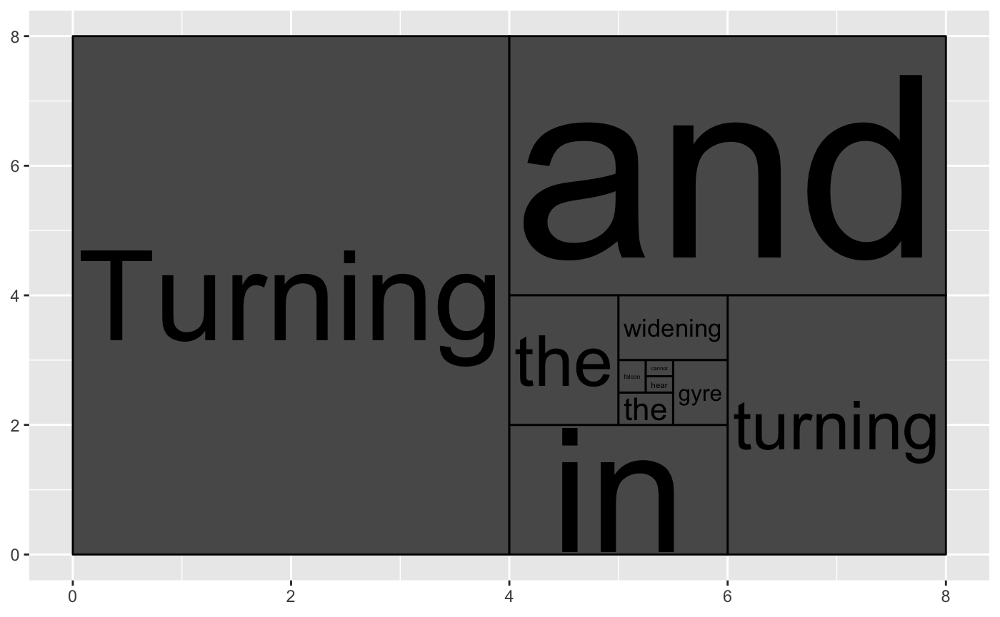
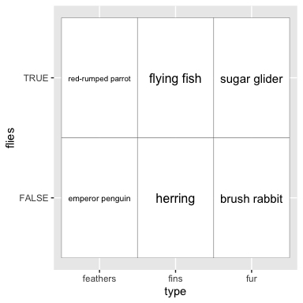
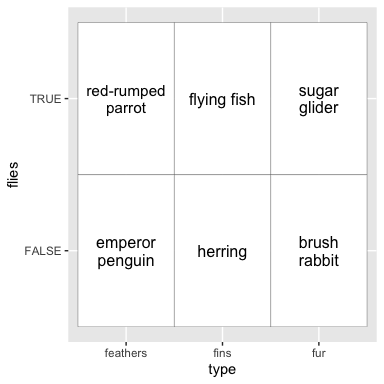
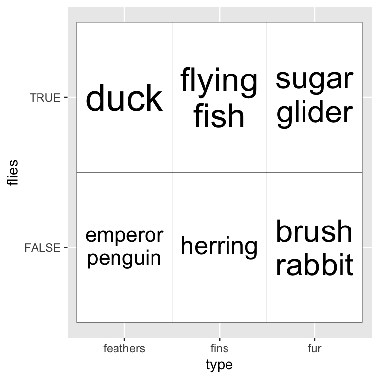
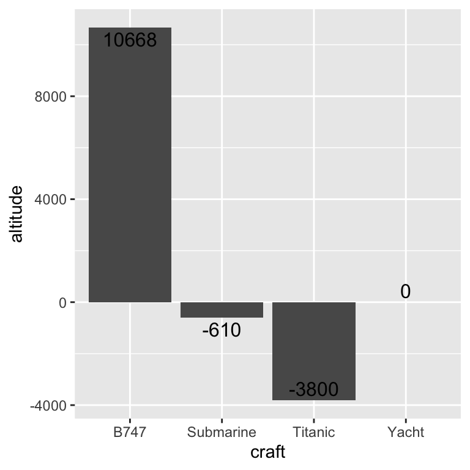
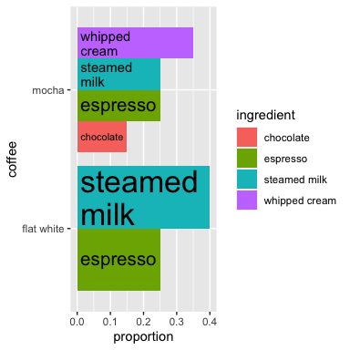
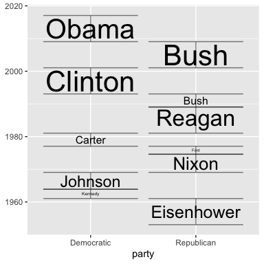
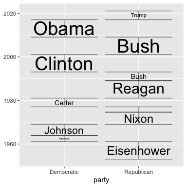
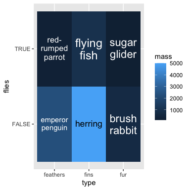

ggfittext provides a ggplot2 geom for fitting text into boxes.

Installation
Install the release version of ggfittext from CRAN:
install.packages("ggfittext")
If you want the development version, install it from GitHub:
devtools::install_github("wilkox/ggfittext")
Fitting text inside a box
Sometimes you want to draw some text in a ggplot2 plot so that it fits inside a defined area. It’s possible to achieve this by manually fiddling with the font size, but this is both tedious and un-reproducible. ggfittext provides a geom called geom_fit_text() that automatically resizes text to fit inside a box. It works like this:
ggplot(animals, aes(x = type, y = flies, label = animal)) + geom_tile(fill = "white", colour = "black") + geom_fit_text()

As with geom_text(), the position of the text is set by the x and y aesthetics. geom_fit_text() automatically infers the width and height of the box in which the text is allowed to fit, and shrinks down any text that is too big.
Reflowing text
Another way to make the text fit in the box is by reflowing it; that is, wrapping it over multiple lines. With the reflow = TRUE argument, geom_fit_text() will reflow the text before (if still necessary) shrinking it:
ggplot(animals, aes(x = type, y = flies, label = animal)) + geom_tile(fill = "white", colour = "black") + geom_fit_text(reflow = TRUE)

Growing text
If you want the text to be as large as possible, the argument grow = TRUE will increase the text size to the maximum that will fit in the box. This works well in conjunction with reflow:
ggplot(animals, aes(x = type, y = flies, fill = mass, label = animal)) + geom_tile(fill = "white", colour = "black") + geom_fit_text(reflow = TRUE, grow = TRUE)

Placing text
By default, text is placed in the centre of the box. However, you can place it in a corner or on a side of the box with the place argument, which takes values “top”, “topright”, “right”, “bottomright”, “bottom”, “bottomleft” and so on:
ggplot(animals, aes(x = type, y = flies, label = animal)) + geom_tile(fill = "white", colour = "black") + geom_fit_text(place = "topleft", reflow = TRUE)

Bar plots
ggfittext provides a convenience function geom_bar_text() for labelling bars in bar plots:
ggplot(altitudes, aes(x = craft, y = altitude, label = altitude)) + geom_col() + geom_bar_text()

geom_bar_text() also works with stacked bar plots (position = "stack"):
ggplot(coffees, aes(x = coffee, y = proportion, label = ingredient, fill = ingredient)) + geom_col(position = "stack") + geom_bar_text(position = "stack", grow = TRUE, reflow = TRUE)

And with dodged bar plots, and coord_flip():
ggplot(coffees, aes(x = coffee, y = proportion, label = ingredient, fill = ingredient)) + geom_col(position = "dodge") + geom_bar_text(position = "dodge", grow = TRUE, reflow = TRUE, place = "left") + coord_flip()

Specifying the box coordinates
If you want to manually set the edges of the box (instead of having them inferred from x and y), you can use xmin & xmax and/or ymin & ymax:
ggplot(presidential, aes(ymin = start, ymax = end, x = party, label = name)) + geom_fit_text(grow = TRUE) + geom_errorbar(alpha = 0.5)

Alternatively, you can set the width and/or height with the width and/or height arguments, which should be grid::unit() objects. The horizontal and/or vertical centre of the box will be defined by x and/or y.
Experimental feature: text in polar coordinates
Text can be drawn in polar coordinates with geom_fit_text() simply by adding coord_polar() to the plot. This feature is experimental and currently only in the development version; any bug reports are very welcome.
ggplot(gold, aes(xmin = xmin, xmax = xmax, ymin = ymin, ymax = ymax, fill = line, label = label)) + coord_polar() + geom_rect() + geom_fit_text(min.size = 0, grow = TRUE) + scale_fill_gradient(low = "#fee391", high = "#238443")

Other useful arguments
All arguments to geom_fit_text() can also be used with geom_bar_text().
-
contrastcan be used to automatically invert the colour of the text so it contrasts against a backgroundfill:
ggplot(animals, aes(x = type, y = flies, fill = mass, label = animal)) + geom_tile() + geom_fit_text(reflow = TRUE, grow = TRUE, contrast = TRUE)

-
padding.xandpadding.ycan be used to set the padding between the text and the edge of the box. By default this is 1 mm. These values must be given asgrid::unit()objects. -
min.sizesets the minimum font size in points, by default 4 pt. Text smaller than this will be hidden (see alsooutside). -
outsideisFALSEby default forgeom_fit_text(). IfTRUE, text that is placed at “top”, “bottom”, “left” or “right” and must be shrunk smaller thanmin.sizeto fit in the box will be flipped to the outside of the box (if it fits there). This is mostly useful for drawing text inside bars in a bar plot, so it isTRUEby default forgeom_bar_text()whenposition = "stacked". -
hjustandvjustset the horizontal and vertical justification of the text, scaled between 0 (left/bottom) and 1 (right/top). These are both 0.5 by default. -
formatterallows you to set a function that will be applied to the text before it is drawn. This is mostly useful in contexts where variables may be interpolated, such as when using gganimate. -
fullheightis automatically set depending on place, but can be overridden with this option. This is used to determine the bounding box around the text. IfFALSE, the bounding box includes the x-height of the text and ascenders, but not any descenders. If TRUE, it extends from the top of the ascenders to the bottom of the descenders. This is mostly useful in situations where you want to ensure the baseline of text is consistent between labels (fullheight = FALSE), or when you want to avoid descenders spilling out of the bounding box (fullheight = TRUE).